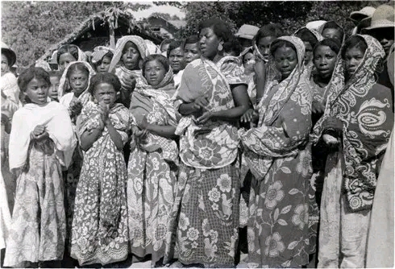

1. Les Antakarana
« Ceux qui peuplent les montagnes rocheuses » se situent dans le nord de l'île à Antsiranana. Ils sont à l'origine des Sakalava émigrés au nord au 17e siècle. On y distingue la cérémonie du Tsangantsaigny, couronnement du mât royal, marquant la pérennité de la monarchie.